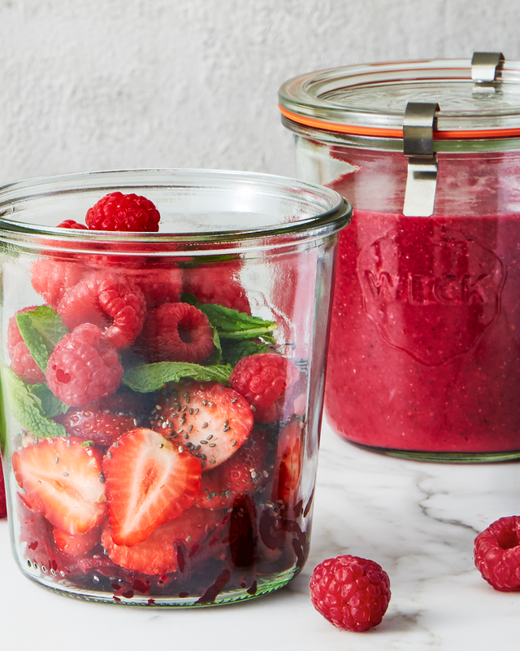

Berry, Chai, Mint Smoothie

Description
With this quick and easy recipe, you’ll eat a half-cup of beets without even realizing it.
Ingredients
- 1 c. sliced strawberries
- 1/2 c. raspberries
- 1/2 c. grated beet (from 1 medium beet)
- 1/3 c. mint leaves
- 1 tbsp. chia seeds
- 1 c. unsweetened almond milk
Steps
- Place berries, beet, mint, and chia seeds in resealable plastic bag or freezer-safe jar. Freeze overnight or longer.
- When ready to prepare, add almond milk to blender, then add frozen ingredients. Blend until smooth. Serve in two tall glasses.
Nutrition per serving: 105 cal, 3 g pro, 17 g carb, 8 g fiber, 7 g sugars (0 g added sugars), 3.5 g fat (0.5 g sat fat), 0 mg chol, 115 mg sodium